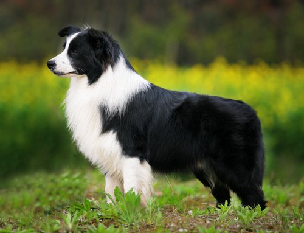
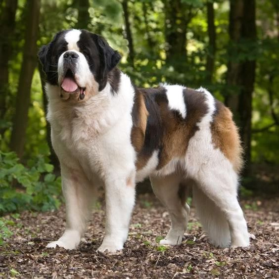
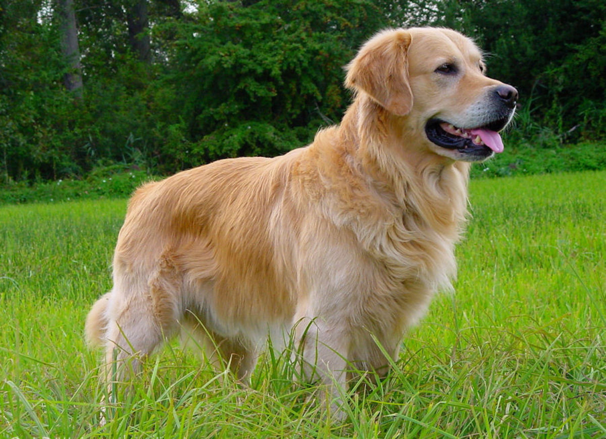

Entre los canes existen una gran variedad de tipos, tamaños y colores, a continuacion una pequeña lista de ellos:
- Caniche
- Border Collie
- San Bernardo
- Golden Retriever
- Mestizo
El caniche es un perro que suele ser chistoso y ruidoso, es un gran compañero para el frío.

EL border collie es un perro conocido por su gran inteligencia y energia. Execelentes perros para control de ovejas.
El perro San Bernardo es el protagonista de la pelicula Beethoven, también es el que esta en Bariloco. Muy grande y peludo. Calentito también debe ser. Ni idea nunca vi uno
El perro conocido por su fachaa, muy amistoso y buen compañero, también es muy peludote. Conozco un par, son buenitos.
El mejor tipo de perro que podes tener en tu vida, el mas fiel de todos. Si le tiras un pedazo de pan te va a seguir por el resto de su vida. La de la foto es la hermosa Dulce. También se los conoce como callejeros.